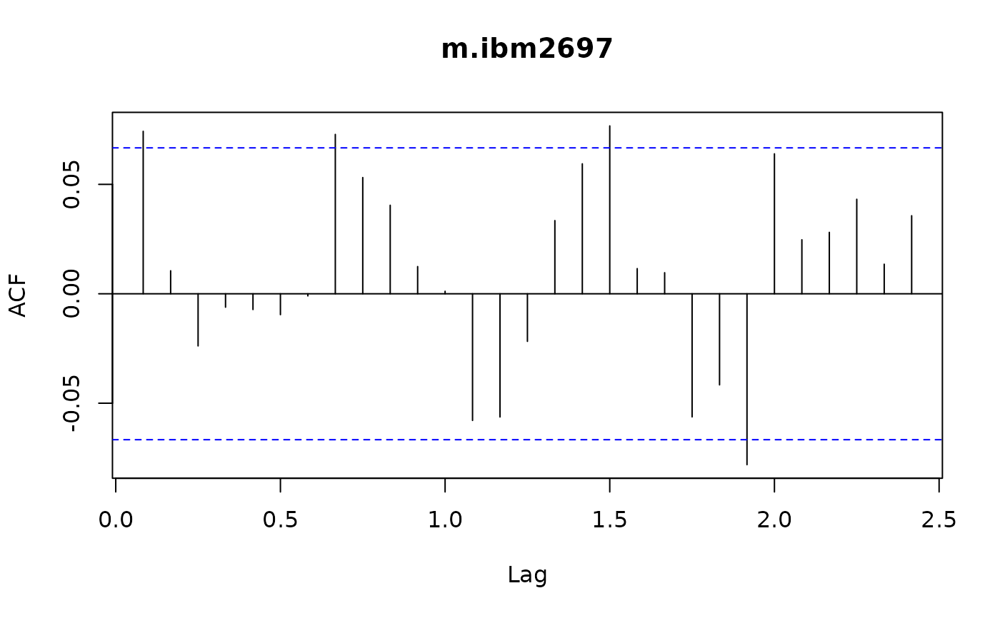
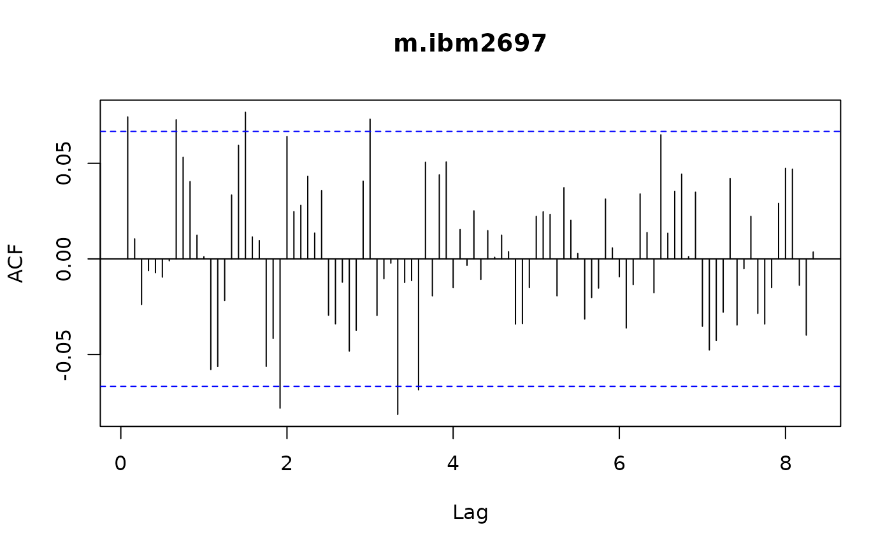
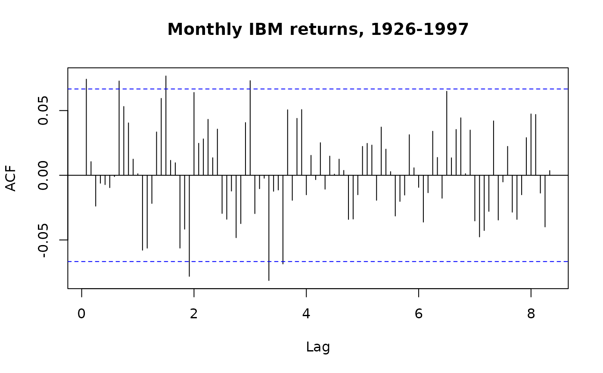

Autocorrelation Function
Acf.RdPlot the ACF without the traditional noninformation unit spike at lag 0.
Usage
Acf(x, lag.max = NULL, type = c("correlation", "covariance", "partial"),
plot = TRUE, na.action = na.fail, demean = TRUE, ...)
# S3 method for Acf
plot(x, ci = 0.95, type = "h", xlab = "Lag", ylab = NULL, ylim = NULL,
main = NULL, ci.col = "blue", ci.type = c("white", "ma"),
max.mfrow = 6, ask = Npgs > 1 && dev.interactive(),
mar = if (nser > 2) c(3, 2, 2, 0.8) else par("mar"),
oma = if (nser > 2) c(1, 1.2, 1, 1) else par("oma"),
mgp = if (nser > 2) c(1.5, 0.6, 0) else par("mgp"),
xpd = par("xpd"), cex.main = if (nser > 2) 1 else par("cex.main"),
verbose = getOption("verbose"), acfLag0 = FALSE, ...)Arguments
- x
for 'acf': a numeric vector or time series.
for 'plot.acf': an object of class 'acf'.
- lag.max
maximum lag at which to calculate the acf.
- ci
coverage probability for confidence interval for 'plot.acf'.
- type
the type of 'acf' or 'plot'
- plot
logical. If 'TRUE' the 'acf' function will call 'plot.acf'.
- na.action
function to be called by 'acf' to handle missing values.
- demean
logical: Should the x be replaced by
x - mean(x)before computing the sums of squares and lagged cross products to produce the 'acf'?- xlab,ylab,ylim,main,ci.col,ci.type,max.mfrow,ask,mar,oma,mgp,xpd,cex.main,verbose
see the help page of
acf:help('acf', package = 'stats').- acfLag0
logical: TRUE to plot the traditional noninformation unit spike at lag 0. FALSE to omit that spike, consistent with the style in Tsay (2005).
- ...
further arguments passed to 'plot.acf'.
Details
These functions are provided to make it easy to plot an autocorrelation function without the noninformative unit spike at lag 0. This is done by calling plot(x, acfLag0 = FALSE, ...). Apart from the 'acfLag0' argument, the rest of the arguments are identical to those for 'acf' and 'plot.acf'.
Value
for acf, an object of class 'Acf', which inherits
from class 'acf', as described with help('acf', package='stats').
for plot.Acf, NULL
Examples
data(m.ibm2697)
Acf(m.ibm2697)

Acf(m.ibm2697, lag.max=100)

Acf(m.ibm2697, lag.max=100, main='Monthly IBM returns, 1926-1997')
